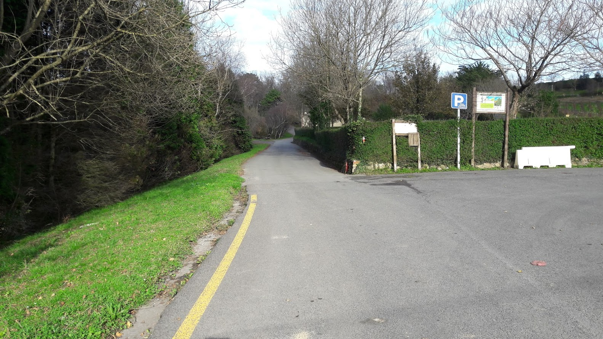
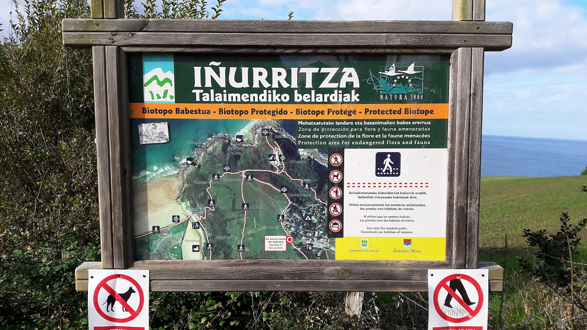
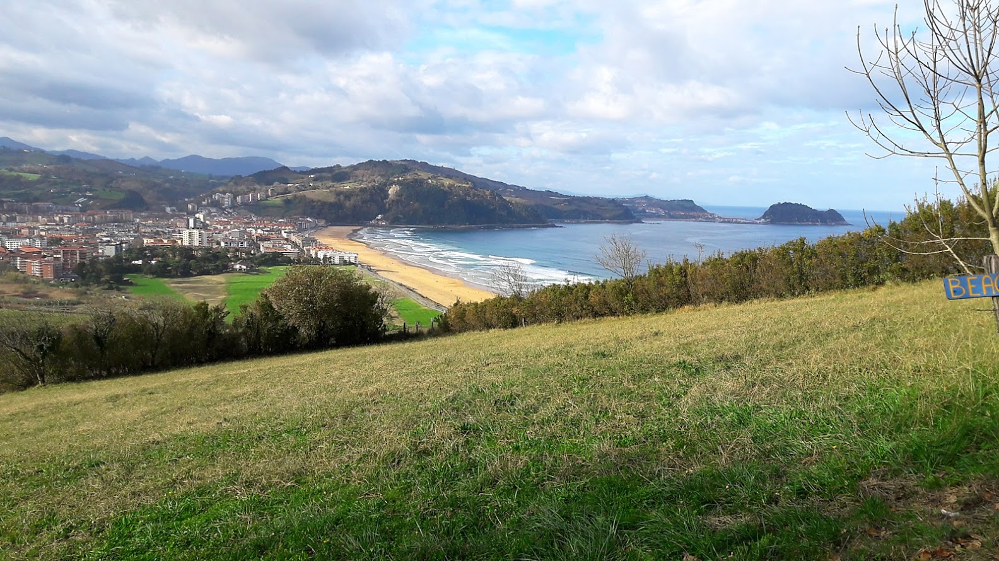
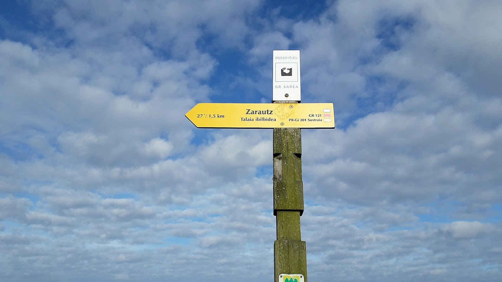

Ibilbidea
Ikastola - Talaimendi - Zamalekua - Malla Harri - Kanala - Ikastola
Ibilbidearen hasiera eta bukaera Salbatore Mitxelena ikastolan. Helburua Malla-Harri (Mollarri zarauztarrentzat) eta Talaimendiko inguruak ezagutzea: Kostaldea, itsasoa eta Iñurritzako Biotopoa.
 1. arg.
1. arg.
Maria Etxetxiki kaletik —Salbatore Mitxelena ikastolaren paretik— abiatu eta hondartza aldeko bidea hartuko dugu Iñurritza auzoko ermitatik pasatuta. N-634 errepidera iritsitakoan, lurpeko pasagunetik pasatuko gara eta eskuinaldera joango gara herriko sarreran dagoen biribilgune ingururaino.
Maria Eizagirre “Maria Etxetxiki” Zarautzen jaio zen 1886. urtean Añurbe baserrian, eta Etxetxiki baserrira ezkondu.
Zarautzen kale horrek bakarrik du emakume baten izena. 11 seme-alaba izan zituen. 21 urterekin hasi zen emagin-lanetan, eta bizitza guztia eman zuen lan horretan. Baina ez hori bakarrik: 11 seme-alaben arduraz gain, besteak beste, injekzioak jartzen zituen, hilzorian zeudenak zaindu, San Pelaioko ermita zaindu eta etxeko baratzean jarduten zuen.
«Iñurritza» eta «Abendats» ezizenez ezaguna, Zarautzen jaio zen 1919an, eta euskal olerkaria izan zen. Apaiz frantziskotarra zela, Frankismo garaian Espainiako Eliza ofizialak jarraitzen zuen ildoarekin ados ez zegoenez eta hizkuntzaren eta hiztunen egoera itota ikusten zuenez, bere burua misioetara erbesteratzea erabaki zuen.
Mitxelenaren idazlanak euskararekiko eta Euskal Herriarekiko samin arduraz beterik daude eta bere olerkigintza bertsogintza tradizionaletik oso hurbil dago.
Espaloitik goazela, ezkerraldera etxe batzuk aurkituko ditugu eta haien artetik goiko kanpinera doan bidea hartuko dugu (2. arg.). Errepide hori hartu eta berehala dagoen bidexka hartuko dugu Agerre Goikoa landa-turismoko etxea ezkerretara utzita.
Bidexkaren bukaeran goiko kanpinera doan bide nagusian sartuko gara. Ezkerretik joango gara, maldan gora. Errepidean gora goazela ezkerretara ikusi ahal izango ditugu Iñurritzako estuario osoa eta dunak.
3. arg.Talaiberri txakolindegiaren parera iritsitakoan, kanpineko hasieran, ezkerreko bidetik jarraituko dugu (3. arg.). Hor azalduko zaigu bidea erakusten digun errotulua.
4. arg. 5. arg.Iñurritza biotopoan sartu garela adierazten digun taula ikusiko dugu (4. arg.). Talaimendiko landazabaletik (5. arg.) (belardietatik) pasatuko gara orain.
Zarauzko ekialdeko eremu hau 1997. urtean biotopo izendatu zen eta 2007an KBE (Kontserbazio Bereziko Eremua). Babes Dekretuan bertan zehazten da Iñurritza errekaren estuarioa eta itsasaldeko eremua euskal kostaldeko ekosistemen erakusgarri bikaina direla (Iñurritzako hegaztiak). Bestalde, Malla Harriko gunean 1906an kaia eraiki zen eta hara joaten zen Asteasuko meategiko mineral guztia aireko kableetan ibiltzen ziren bagonetetan. 1923an itxi zen, baina ontziratu aurretik minerala biltzeko erabiltzen zen zamalekua han dago, berreraikia, eta bertatik itsas zabaleko eta Getaria zein Orioko ikuspegiaz goza daiteke.
Belardiotan harrapariak eta txori txikiak topa ditzakegu. Harraparien artean zapelatza, belatz gorria, zuhaitz-belatza eta mirotz zuria ikus daitezke. Txori txikientzat berriz, eremu aberatsa da landazabala, eta udaberrian sinfonia paregabeak entzuten dira; adibidez, txantxangorria, birigarroa, karnaba…
Talaimendiko eremuan sartu gara. Laster ikusiko dugu Malla Harri, eta han, berriturik dagoen zamalekura eramango gaituen bidea hartuko dugu (6. eta 7. arg.).
Zamalekuaren gainetik pasatzen den bidea hartuko dugu. Itsasoaren gainean gaudela irudituko zaizue. Eraikuntza inguratuko dugu (8. arg.).
Malla Harriko irletan ubarroi mottoduna eta kaio hankahoria ikus daitezke urte osoan. Neguan, berriz, ubarroi handia, kaio beltza eta kaio iluna. Jendearen presentziak ez diete uzten itsas hegaztiei bertan habia egiten. Kontuan izan.
Eraikin honetan jasotzen zuten Asteasutik garraiatutako minerala eta handik kargatzen ziren Malla Harriko uharteetara gerturatzen ziren ontziak, itsasoak laguntzen zuenean. Tartetxo bat hartu ondoren, etorritako bidetik itzuliko gara.
10. arg.Bidean gora goazela, lehen bidegurutzean (10. arg.) Zarautza jaisteko kostaldeko bidea hartuko dugu (eskuinera), eta eskaileretatik jaitsiko gara Iñurritza errekak itsasoarekin bat egiten duen lekura (kanala deritzo). Kanalera iritsitakoan bi bide daude aukeran: hondartzako dunen gainetik doan egurrezko pasagunea edo ezkerrera doan bidea. Guk bigarren bide hori aukeratuko dugu gaur, Iñurritzako estuarioa ezagutzeko (11. arg.) (beste ibilbide batean izango da aukera dunak ezagutzeko).
"Estuarioak (inguruko herrietan errio deituak) itsasoa ibaian barna sartzen den lekuak dira, alegia, ibaiaren bokalean, marearen eta olatuaren eraginez itsasoko ur gazia ibaiko ur gezarekin nahasten den eremu zabalak. Itsasoa eta ibaia, biak ala biak ekosistema indartsu eta dinamikoak dira, eta ondorioz, elkar topatzen direneko eremu hauek aldakorrak eta biziak dira ezinbestean" (Iñurritzako hegaztiak liburua).
Iñurritzako estuarioan hegazti migratzaileek egiten duten egonaldian elikatu eta atseden hartzen dute. Azken bost urtetan ia 200 hegazti-espezie ikusi eta identifikatu dira bertan. Hegaztiaz gainera, aberatsa da paduretako landare-espezieetan, 24 espezie daude, haietatik 13 galtzeko arriskuan daudenak. Euskal Herrian hemen bakarrik daudenak: bi espezie daude eta Gipuzkoan hemen bakarrik daudenak: beste bi.
Errekari gorantz jarraituz, herriko araztegiaren eta beheko kanpinaren ondotik pasatuta, N-634 errepidera iritsiko gara. Espaloia hartuko dugu eskuinera, bidea gurutzatzeko lehendabiziko semaforoan bidea gurutzatuko dugu eta 200 metro eginda ikastolara iritsiko gara.